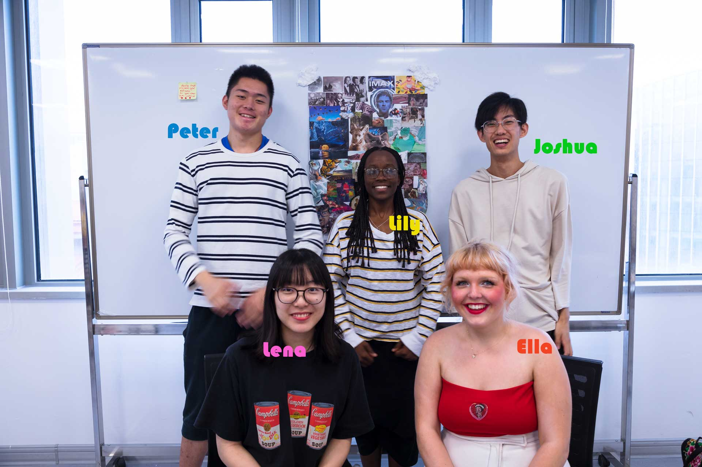

Dream Capturer
• Wireless Charging.
• Voice Activated
• Be The Star Of Your Own Movie
• More Magical Than Ever
• Transform The Way You Sleep
• Life Is Dreamier With Dreamatic
Our Team
Why Dream Capturer
Humanity spends half of its life asleep and yet many don’t know anything about what happens during this precious time. Our product The Dream Catcher allows humanity to utilize this large portion of your time on this earth spent dreaming. A greater understanding of your dreams will better your mental health as dreams are how we process our daily life and emotions. Connecting our waking life to our dreams gives us the key to vital information on our bodies state which we’ve never had access to before.
The Dream Catcher by Dreamatic is the ultimate all in one device for you to dream while awake. With multiple functionality The Dream Catcher captures your dreams through a brain scanning process, these images are then uploaded to a cloud and stored for you to watch at your leisure. The Dream Catcher portable eyepiece then projects your dreams for you wherever you wish.
Dreamatic makes it possible for you to find advice, share, discuss and find the meanings behind your dreams through our open user platform.
Community